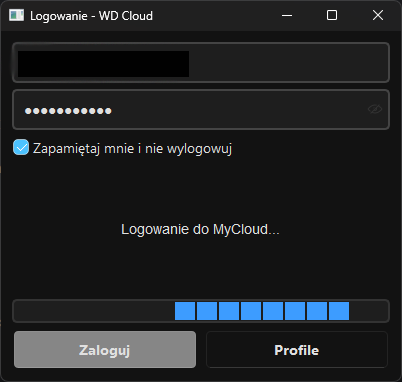
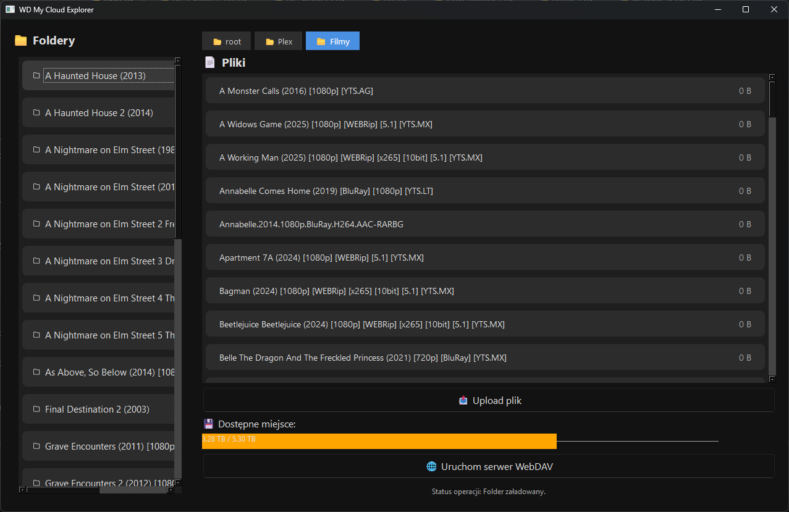
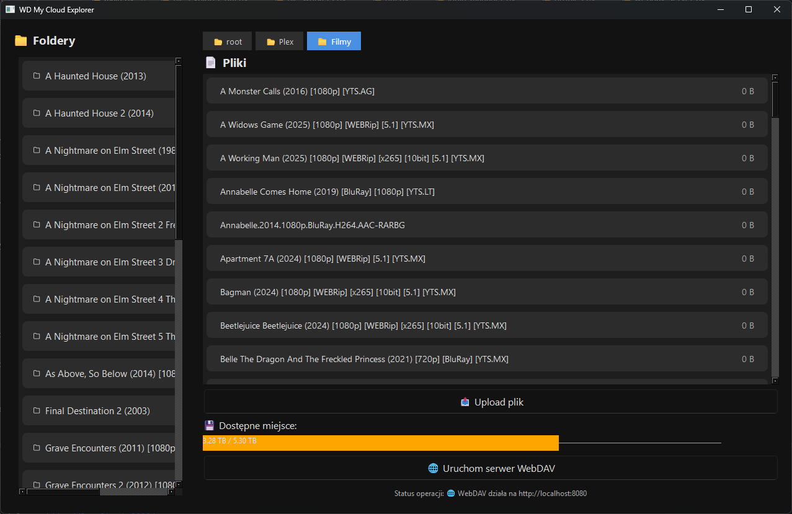
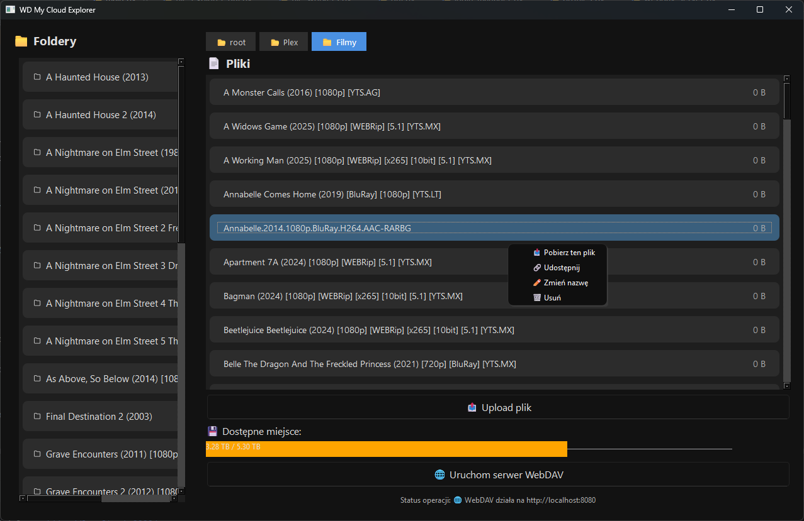
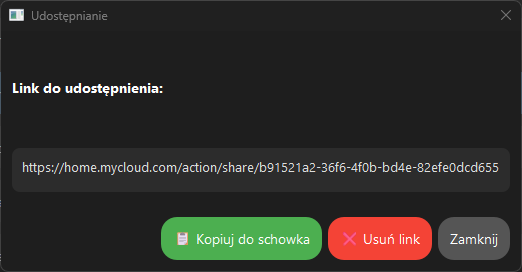
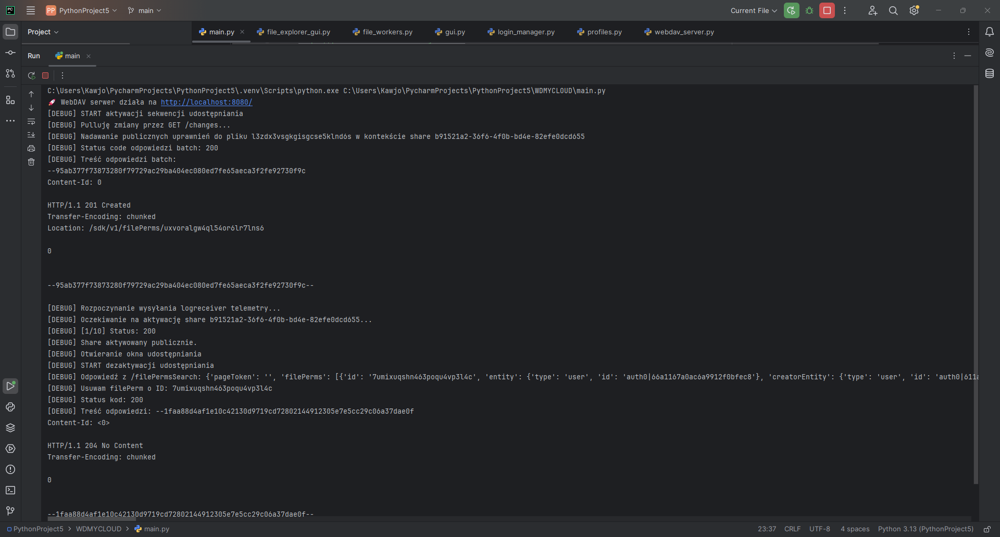
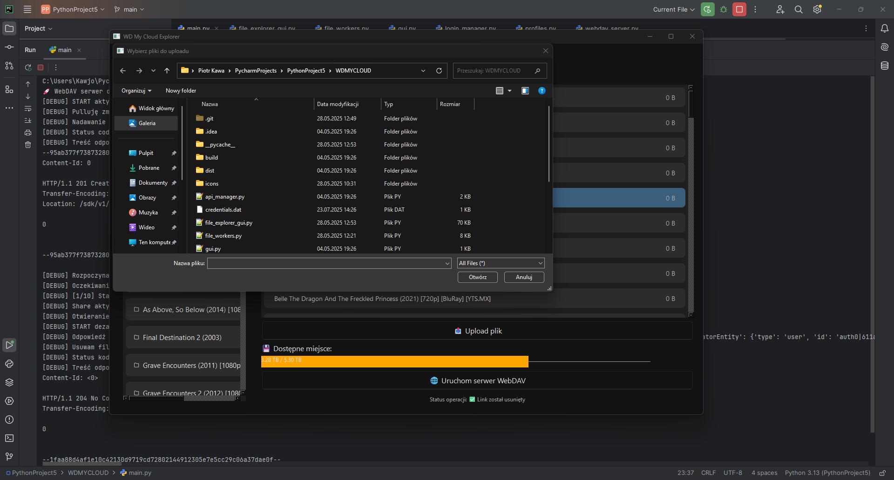

WD Cloud Dashboard – Pełna Integracja z WebDAV i API chmurowym
Backend – Architektura i Technologie

Fragment kodu: automatyczne pobieranie tokenu OAuth
Fragment kodu: inicjacja WebDAV przez WsgiDAV
Frontend – Nowoczesny Interfejs Użytkownika






×

1 / 6
Demo wideo – pełny przebieg logowania i montowania dysku
WD Cloud Dashboard